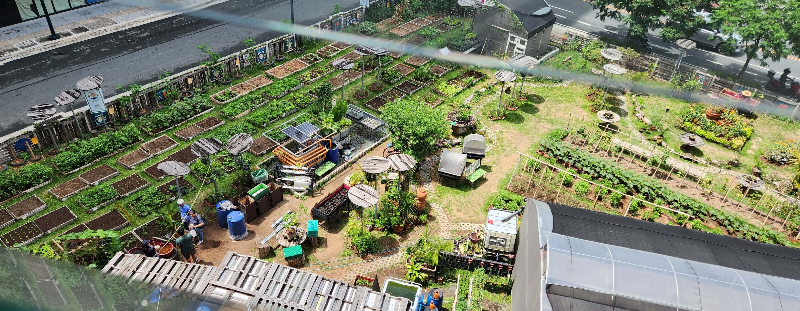
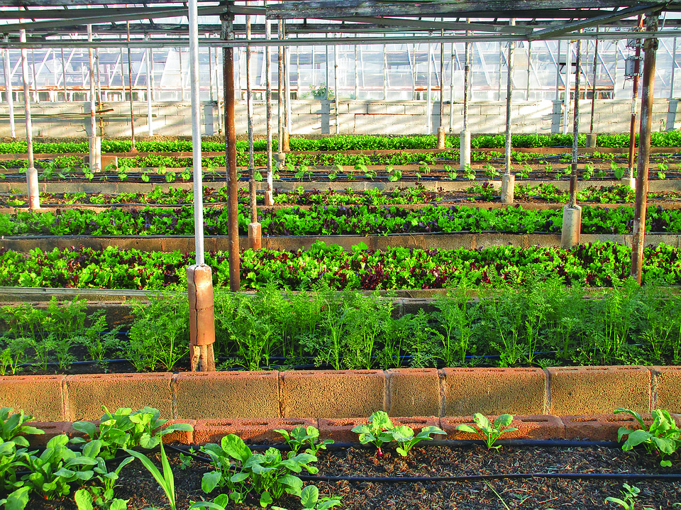
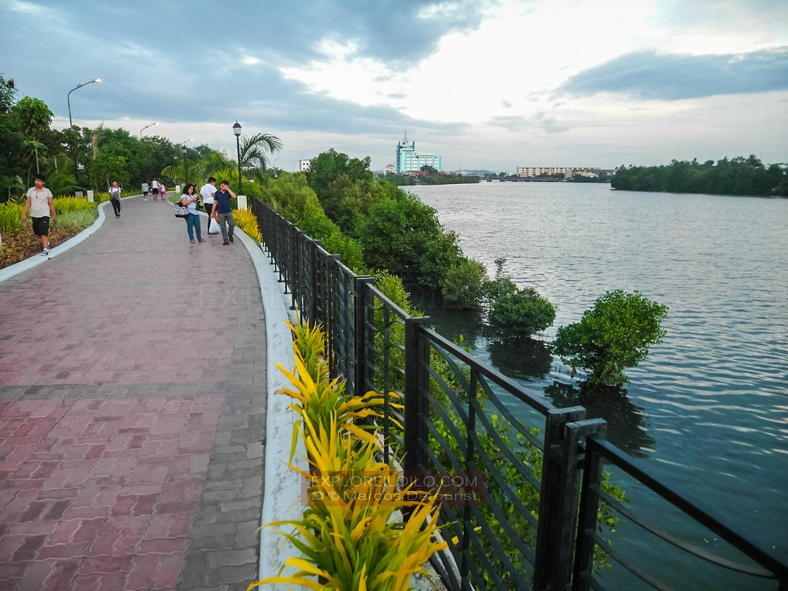

BGC Community Farm (Taguig)
How Urban Farmers PH turned a vacant lot in the heart of Bonifacio Global City into a thriving agricultural hub...
 GreenCities
GreenCities
Read inspiring stories from individuals and communities who have transformed their spaces.

How Urban Farmers PH turned a vacant lot in the heart of Bonifacio Global City into a thriving agricultural hub...

A flagship food security program in Quezon City that has successfully established over 1,000 urban gardens...

The award-winning ecological rehabilitation that transformed a polluted river into a stunning 9-kilometer linear park...
What do you do with an empty, unused gravel lot in the middle of one of the Philippines' most expensive business districts? For Louie Gutierrez and the team at Urban Farmers PH, the answer was simple: build a farm.
Launched during the height of the pandemic, the BGC Community Farm transformed a vacant lot at 5th Avenue corner 34th Street into a sprawling, lush agricultural oasis. Instead of concrete, the space is now filled with raised beds growing lettuce, tomatoes, and native herbs. The farm operates entirely organically, utilizing modern urban techniques like vertical farming and hydroponics without the use of chemical pesticides.
Today, it serves as a crucial green hub where both expats and locals can volunteer. In 2025, it was officially designated as a Certified Learning Site for Agriculture (LSA) by the Agricultural Training Institute, proving that food security and agriculture can thrive even in the densest urban jungles.
When Quezon City launched the "Joy of Urban Farming" program in 2010, it started simply as a small demonstration farm at the Quezon Memorial Circle. The goal was to teach residents how to grow their own food to combat urban poverty and food insecurity.
Over the years, the initiative exploded in scale. By providing training, seeds, and starter kits to residents, the program empowered citizens to convert idle spaces, rooftops, and backyards into productive green patches. They utilized highly accessible methods like container gardening and upcycling plastic bottles into vertical planters.
Today, the program proudly boasts over 1,000 thriving urban farms spread across the city's barangays, public schools, and daycares. It stands as one of the most successful, wide-scale LGU-led food security and urban greening programs in the Philippines.
For decades, the Iloilo River suffered from severe pollution, clogged with garbage, informal settlements, and toxic runoff. The city faced a critical choice: let the waterway die, or embark on a massive ecological rehabilitation.
They chose to fight for the river. Led by the local government and designed by renowned architect Paulo Alcazaren, the project involved a massive clean-up, the relocation of settlers to safer housing, and the planting of thousands of mangroves to naturally filter the water and prevent erosion. Instead of building a car-centric road along the riverbank, they built a pedestrian-only linear park.
The result is the Iloilo River Esplanade, a stunning, multi-awarded 9-kilometer green corridor that has brought biodiversity back to the city. It is now celebrated globally as the gold standard for urban river rehabilitation and sustainable public space in the Philippines.